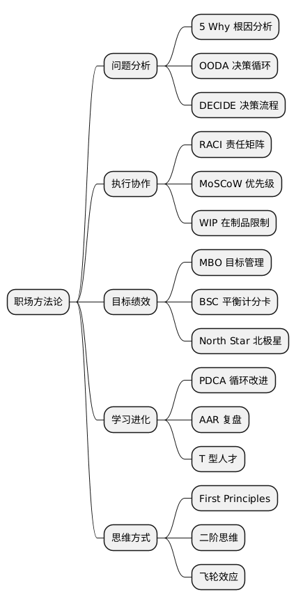

职场中那些“活得最久”的方法论缩写
Posted on 日 11 1月 2026 in Journal
| Abstract | Journal on 2026-01-11 |
|---|---|
| Authors | Walter Fan |
| Category | learning note |
| Status | v1.0 |
| Updated | 2026-01-11 |
| License | CC-BY-NC-ND 4.0 |
职场中那些“活得最久”的方法论缩写
能成为缩写的，不是因为它新， 而是因为它被反复验证过，值得被记住。
一、问题分析与决策类（理性对抗混乱）
1. 5 Why
连续追问 “为什么？”
方法论内核：
问题 ≠ 现象，根因往往藏在第 3～5 层
- 来源：丰田生产方式（TPS）
-
适用：
-
事故分析
- 质量问题
- 系统性故障
⚠️ 老手提醒：
5 Why 不是“找人背锅工具”，而是“找系统缺陷工具”。
2. OODA Loop
Observe – Orient – Decide – Act
方法论内核：
决策速度 + 反馈质量，决定竞争优势
- 源于空战
-
在：
-
创业
- 战略博弈
- 技术路线选择 中极其好用
👉 对应程序员世界：快速迭代 + 回滚能力
3. DECIDE
- Define
- Establish
- Consider
- Identify
- Develop
- Evaluate
方法论内核：
决策是流程，不是灵感
适合：
- 高风险
- 跨团队
- 不可逆决策
二、执行、推进与协作（把事真的干成）
4. RACI
- Responsible
- Accountable
- Consulted
- Informed
方法论内核：
模糊责任，是一切协作失败的源头
在跨部门项目中，它的价值远高于任何“加油打气”。
5. MoSCoW
- Must
- Should
- Could
- Won’t
方法论内核：
资源永远不够，优先级比努力重要
在：
- 产品需求评审
- 项目范围管理 中极其有效。
6. WIP
Work In Progress
方法论内核：
多任务 ≠ 高效率
- 看板 / Kanban 核心指标
- 限制 WIP，本质是保护系统吞吐量
三、目标、结果与绩效（别忙错方向）
7. MBO
Management by Objectives
方法论内核：
管理的核心，是目标对齐，而不是过程控制
OKR 的“前世”。
8. BSC
Balanced Scorecard
- 财务
- 客户
- 内部流程
- 学习与成长
方法论内核：
单一指标一定会骗人
比 KPI 更“抗作弊”。
9. North Star Metric
北极星指标
方法论内核：
一个指标，代表用户长期价值
- Airbnb：预订晚数
- Facebook：有意义的互动
👉 技术团队也需要自己的“北极星”。
四、学习、复盘与组织进化（长期主义）
10. PDCA / PDSA
Plan – Do – Check/Study – Act
方法论内核：
优化不是革命，是循环
DevOps、敏捷、精益的共同祖先。
11. AAR
After Action Review
方法论内核：
不复盘的成功，迟早变成事故
美军的核心组织学习机制。
12. T 型人才
- 一竖：专业深度
- 一横：跨界理解
方法论内核：
单点专家在系统中越来越脆弱
五、认知与思维方式（真正拉开差距的地方）
13. 第一性原理（First Principles）
虽然不是缩写，但必须出现。
方法论内核：
拆掉“行业共识”，回到物理事实
适合：
- 技术选型
- 架构设计
- 职业转型
14. Second-Order Thinking
（二阶思维）
方法论内核：
不只看“下一步”，还要看“下一步之后”
管理与架构决策必备。
15. Flywheel
飞轮效应
方法论内核：
增长不是爆发，而是动能累积
非常适合理解：
- 技术债
- 平台效应
- 个人长期积累
六、一张“老程序员私藏”的总结表
| 领域 | 你该熟到本能反应的 |
|---|---|
| 表达 | STAR / CAR |
| 分析 | SWOT / 5 Why / MECE |
| 决策 | OODA / First Principles |
| 执行 | RACI / WIP / MoSCoW |
| 目标 | OKR / North Star |
| 工程 | SOLID / CI/CD |
| 进化 | PDCA / AAR |
最后一句“不中听但有用”的话
缩写不是能力，但能暴露能力边界。
- 只会背：说明你在门口
- 会用：说明你在场内
- 知道什么时候不用：说明你在主导
@startmindmap
* 职场方法论
** 问题分析
*** 5 Why 根因分析
*** OODA 决策循环
*** DECIDE 决策流程
** 执行协作
*** RACI 责任矩阵
*** MoSCoW 优先级
*** WIP 在制品限制
** 目标绩效
*** MBO 目标管理
*** BSC 平衡计分卡
*** North Star 北极星
** 学习进化
*** PDCA 循环改进
*** AAR 复盘
*** T 型人才
** 思维方式
*** First Principles
*** 二阶思维
*** 飞轮效应
@endmindmap

本作品采用知识共享署名-非商业性使用-禁止演绎 4.0 国际许可协议进行许可。